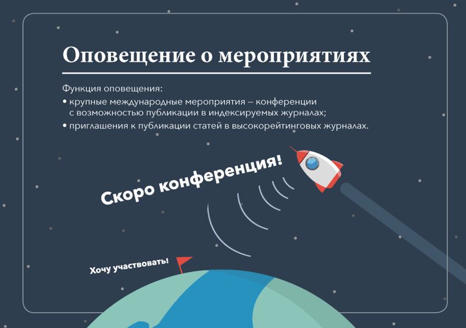

Степан Гусев
Как я запускал ракету в космос
«Ракета индекса Хирша» — веб-система для университета. Она призвана увеличить количество и качество публикаций, а значит — поднять рейтинг университета на международном уровне.
